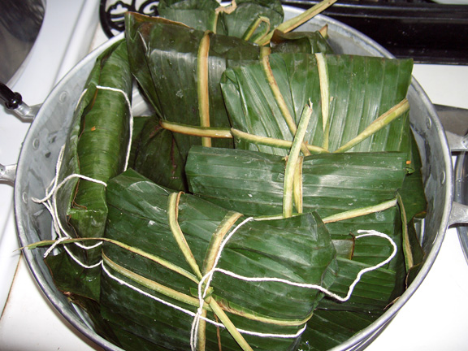

Nacatameles

Description
Nacatamales are a traditional dish found in Nicaragua wrapped in banana or plaintain leaves
and steamed for anywhere between 4 to 6 hours they are filled with a vast variety of ingredients that can include
things such as but not limited to pork, rice, olives, japanenos, prunes and slices of potatoes.
The masa is usually softer than the common Mexican tamales and easily falls apart.
I recommend eating these tamales with a fork.
Ingredients
- 6 ozs pork jowl, cut into one inch cubes
- 2 lbs park ribs, roughly cut with the bones removed
- 3 tomatoes grated
- 1 cup diced white onion
- 1 red bell pepper, chopped
- 6 garlic cloves, peeled
- 1 tablespoon achiote or annatto, dissolved in water
- 1/2 cup juice from a bitter orange
- salt
Dough Ingredients
- 1 teaspoon black pepper
- 2 lbs corn flour, the type for making tortillas
- 3 cups lukewarm water
- juice from one whole bitter orange